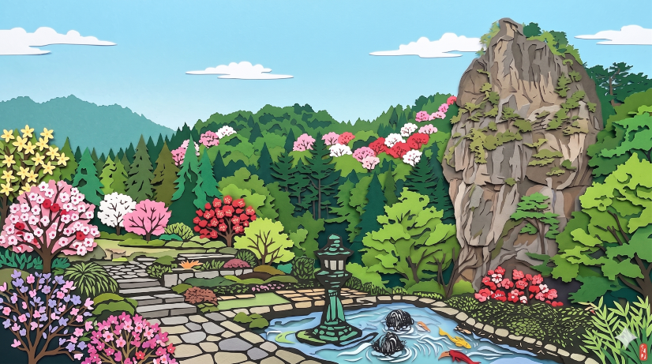

ふるさとを離れて暮らす人へ 心に響く懐かしい音
ふるさとの友よ 音楽館
～懐かしい風景と大切な人を想う音楽の記憶～

🎵 🌸 ふるさとを想うオリジナル音楽集
ふるさとの青い空、山や川、季節の風、懐かしい家並み。
そして、共に過ごした家族や友人たち。
この音楽館では、ふるさとを離れて暮らす人の心に寄り添う、さまざまなオリジナル曲をお届けします。懐かしい風景や大切な人を思い浮かべながら、どうぞゆっくりと音楽をお楽しみください。
【聴き方】 下の曲リストからお好きな曲を直接タップしていただくと、思い出の写真と音楽プレイヤーが表示され、音楽をお楽しみいただけます。
下の楽曲を選択すると、写真・プレイヤーと共に南相木村の懐かしい情景解説が始動します。
ふるさとの思い出トラック (全13曲)
Our Beloved Hometown
ふるさと、信州・南相木村に想いを寄せて
この音楽館は、ふるさとを離れて暮らすすべての方、そして信州・南相木村を愛する皆さまへ向けて企画されました。毎日見上げた凛々しい「御座山」、清らかなせせらぎを響かせる「相木川」、水しぶきを上げた「おみかの滝」や「犬ころの滝」、初夏に赤く染まった「立原高原」、そして静かな「立岩湖」……。目を閉じて音を聴けば、あの澄み切った信州の風と、友と過ごした懐かしい日々が、時を超えて鮮やかに心に蘇ります。
Hometown Landmarks
8 Beautiful Spots御座山 (おぐらさん)
南相木のシンボル。どこからでも見える優美な頂きは、私たちの誇り。
おみかの滝
3つの滝壺からなる名勝。激しくも厳かな流れは今も変わりません。
立原高原
白樺とカラマツの林。初夏には２万株のレンゲツツジが赤く咲き誇ります。
八月一日の祈り (戌の満水)
寛保の大水害を供養し、先人やご先祖様へ感謝を捧げる佐久地域特別な風習。
立岩湖 (たていわこ)
シナノユキマスが泳ぐ、山懐に抱かれた静かな静寂の湖面。
昭和の木造校舎
ストーブの匂い、廊下のきしむ音、放課後に響いたみんなの笑い声。
犬ころの滝 ＆ 滝見の湯
苔むした岩場を流れ落ちる美しい滝と、今では名物となった温泉のせせらぎ。南相木の豊かな水が育む癒しの光景です。